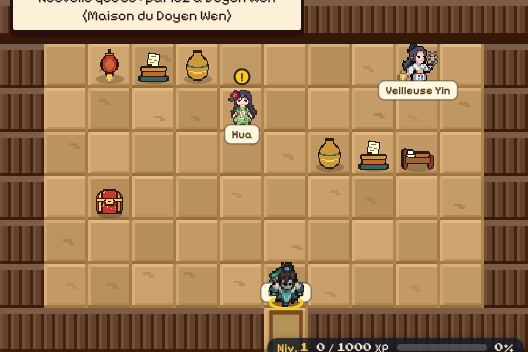
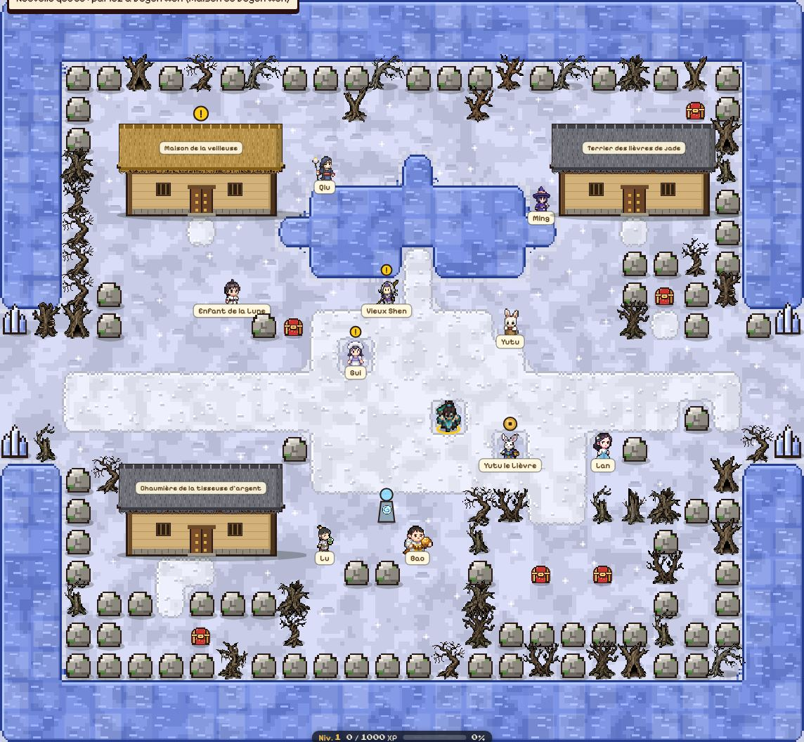

Chang'e (Vêtue de lumière lunaire) — Pic de la Lune (partie ouest de l’écran) Itinéraire depuis le village : Hameau sous la Lune → Sentier d'Argent → Pic de la Lune
Objectifs
Ouvrir : Déposer les gâteaux de lune sur l'autel (sommet du Pic de la Lune) Lieu : Pic de la Lune (partie est de l’écran) — itinéraire : Hameau sous la Lune → Sentier d'Argent → Pic de la Lune
Récompense
800 pièces d’or · 27700 points d’expérience · composant de flèche : Gâteau de pleine lune
Où chercher
12
Pic de la Lune : 1 Chang'e (donne la quête) · 2 Autel des gâteaux de lune (objectif)
L'osmanthus qui repousse Pic de la Lune
Prérequis
Aucun, disponible dès l’arrivée.
Donneur
Wu Gang (Bûcheron éternel de l'osmanthus) — Sentier d'Argent (partie nord-ouest de l’écran) Itinéraire depuis le village : Hameau sous la Lune → Sentier d'Argent
Objectifs
Ouvrir : Vider la dernière cache de bois de Wu Gang (sentier d'argent) Lieu : Sentier d'Argent (partie sud-ouest de l’écran) — itinéraire : Hameau sous la Lune → Sentier d'Argent
Vaincre : Chasser l'ombre du miroir qui rôde sur le sentier (sentier d'argent) Lieu : Sentier d'Argent (partie ouest de l’écran) — itinéraire : Hameau sous la Lune → Sentier d'Argent
Ombre du miroir — niveau du héros +0, ne réapparaît pas, immobile (sentinelle)
Lieu : Sentier d'Argent (partie ouest de l’écran)
Espèce : Assassin Masqué (Humain) — Force : Arcane (violet) — Faiblesse : Terre (vert) — frappe fort, rapide et sournois
Sentier d'Argent : 1 Wu Gang (donne la quête) · 2 Cache sous le givre (objectif) · 3 Ombre du miroir (objectif)
La dernière lanterne de Hua Pic de la Lune
Prérequis
Aucun, disponible dès l’arrivée.
Donneur
Hua (Colporteuse aux mille babioles) — Maison de la veilleuse (partie nord de l’écran) Itinéraire depuis le village : Hameau sous la Lune → Maison de la veilleuse
À rapporter à
Veilleuse Yin — Maison de la veilleuse (partie nord-est de l’écran)
Objectifs
Parler à : Porter la lanterne de Hua à la veilleuse Yin (Hameau sous la Lune) Lieu : Maison de la veilleuse (partie nord-est de l’écran) — itinéraire : Hameau sous la Lune → Maison de la veilleuse
Récompense
200 pièces d’or · 11540 points d’expérience · composant de flèche : Lanterne de Hua
Où chercher

123
Maison de la veilleuse : 1 Hua (donne la quête) · 2 Veilleuse Yin (à qui la rendre) · 3 Veilleuse Yin (objectif)
Les gâteaux de Gui Pic de la Lune
Prérequis
Aucun, disponible dès l’arrivée.
Donneur
Gui (Cuisinier de gâteaux de lune) — Hameau sous la Lune (au centre de l’écran)
Objectifs
Ouvrir : Retrouver la boîte à gâteaux (Hameau sous la Lune) Lieu : Hameau sous la Lune (au centre de l’écran)
Parler à : Porter un gâteau à la veilleuse Yin (maison de la veilleuse) Lieu : Maison de la veilleuse (partie nord-est de l’écran) — itinéraire : Hameau sous la Lune → Maison de la veilleuse
Récompense
200 pièces d’or · 11540 points d’expérience · composant de flèche : Pâte de lotus
Où chercher

12
Hameau sous la Lune : 1 Gui (donne la quête) · 2 Boîte à gâteaux de lune (objectif)
1
Maison de la veilleuse : 1 Veilleuse Yin (objectif)
La rivière d'argent Pic de la Lune
Prérequis
Aucun, disponible dès l’arrivée.
Donneur
Vieux Shen (Passeur d'argent) — Hameau sous la Lune (au centre de l’écran)
Objectifs
Parler à : Écouter le Corbeau d'ombre (sentier d'argent) Lieu : Sentier d'Argent (partie sud-ouest de l’écran) — itinéraire : Hameau sous la Lune → Sentier d'Argent
Ouvrir : Récupérer la cache de la rivière d'argent (sentier d'argent) Lieu : Sentier d'Argent (partie sud-ouest de l’écran) — itinéraire : Hameau sous la Lune → Sentier d'Argent
Yutu (Lapin de jade) — Hameau sous la Lune (au centre de l’écran)
Objectifs
Ouvrir : Retrouver la dernière page du carnet (sentier d'argent) Lieu : Sentier d'Argent (au centre de l’écran) — itinéraire : Hameau sous la Lune → Sentier d'Argent
Récompense
200 pièces d’or · 11540 points d’expérience · composant de flèche : Carnet complet
Où chercher
1
Hameau sous la Lune : 1 Yutu (donne la quête)
1
Sentier d'Argent : 1 Dernière page du carnet (objectif)
Hua (Colporteuse aux mille babioles) — Maison de la veilleuse (partie nord de l’écran) Itinéraire depuis le village : Hameau sous la Lune → Maison de la veilleuse
Objectifs
Parler à : Demander à la veilleuse Yin d'allumer la dernière lanterne pour Xihe (Hameau sous la Lune) Lieu : Maison de la veilleuse (partie nord-est de l’écran) — itinéraire : Hameau sous la Lune → Maison de la veilleuse
 12
12